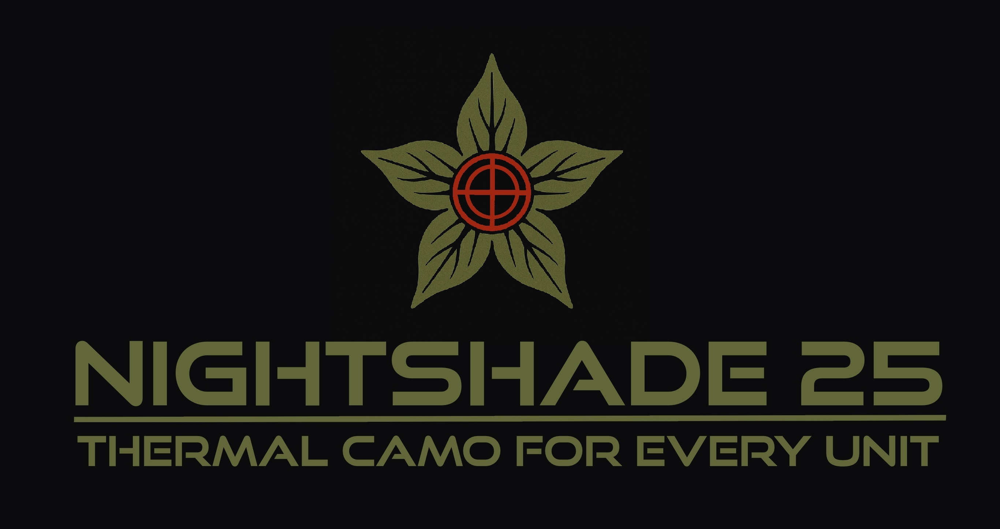
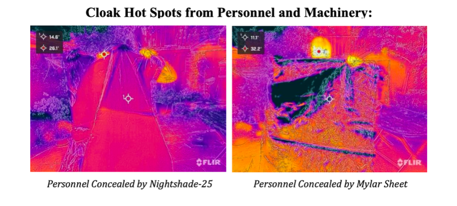
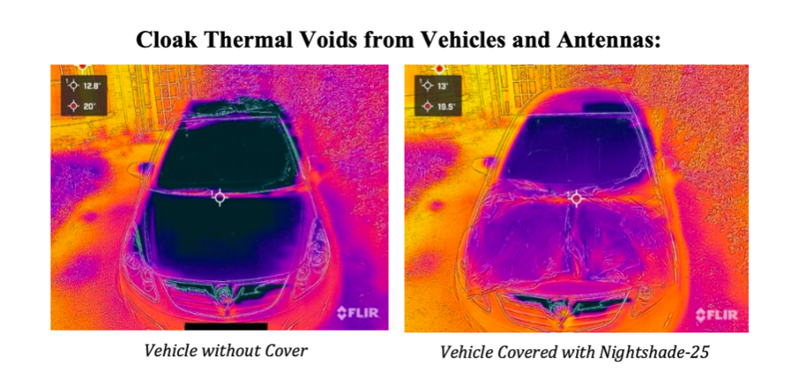

Nightshade-25 is a next-generation thermal cloaking system engineered to provide short-term infrared concealment in high-risk combat zones. Designed with front-line operators and drone teams in mind, it uses affordable, mass-producible phase-change materials (PCMs) and infrared-diffusing composites to mask heat sources — from human bodies to electronics — during critical exposure windows.
The system is entirely passive and recharges without power, using ambient night air to reset its thermal masking capability. Nightshade-25 offers a field-ready balance of effectiveness, simplicity, and scalability — bringing advanced thermal stealth within reach of decentralized and rapidly deployed forces.


For testing inquiries, partnership, or field use:
Email: tomfarnell@me.com